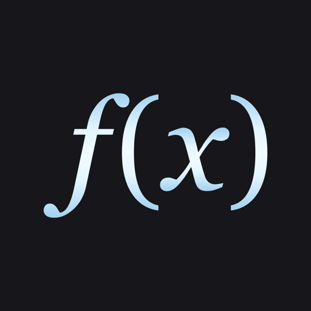
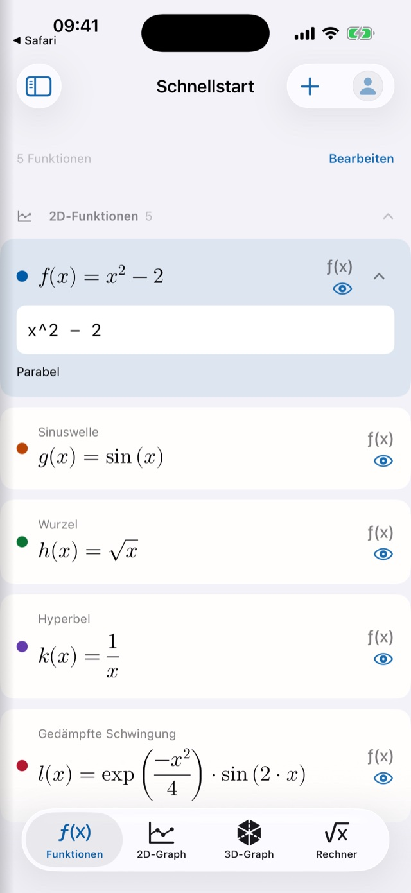
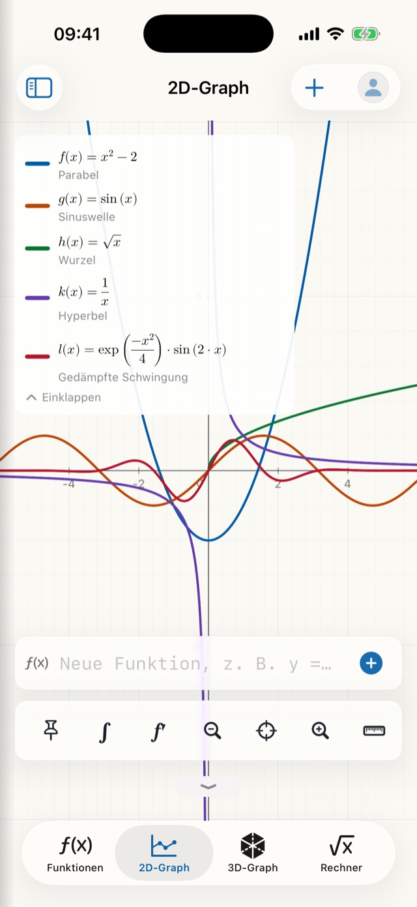
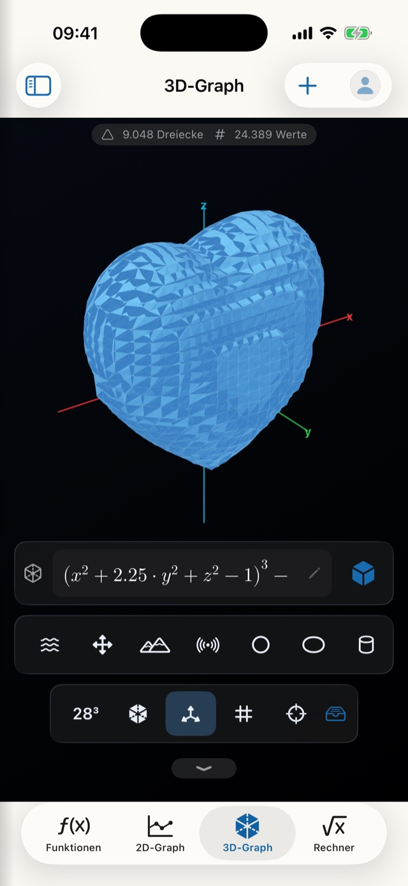
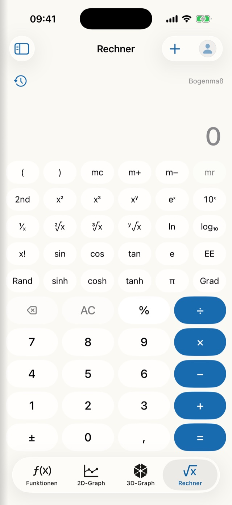

DiamMath
Zeichnen, rechnen, verstehen.
DiamMath ist eine Mathematik-App für die Schule, das Studium und alle, die gern selbst nachrechnen. Sie zeichnet Funktionen, untersucht Kurven, löst Gleichungssysteme und stellt Flächen im Raum dar – und erklärt dabei jeden Schritt, statt nur ein Ergebnis hinzuwerfen. Alles rechnet lokal auf dem Gerät, ganz ohne Konto und ohne Internetverbindung.
Startet rechenbereit
Kein Dateibrowser, kein leeres Blatt: DiamMath öffnet sofort eine benutzbare Arbeitsfläche mit fünf Beispielfunktionen – Parabel, Sinuswelle, Wurzel, Hyperbel und gedämpfte Schwingung. Alle fünf sind bearbeitbar, und jede Änderung wird laufend automatisch gesichert.
- Sofort loslegen statt erst ein Dokument anlegen
- Der Schnellstart bleibt erhalten und wandert per iCloud mit
- Blöcke in den Kategorien 2D-Funktionen, 3D-Funktionen und Notizen

Der Graph, der maßstabstreu bleibt
Gitter, Achsen und Beschriftung laufen zwingend mit dem Ausschnitt mit. Verschieben und Zoomen geschieht mit den Fingern, und die Achsen sind ab Werk gleich skaliert – ein Kreis bleibt deshalb ein Kreis und wird nicht zur Ellipse.
- Die Legende setzt jede Kurve als „f(x) = Term“ im echten Formelsatz
- Acht klar unterscheidbare Kurvenfarben, automatisch vergeben
- Ein Tipp setzt das Fadenkreuz – die Legende zeigt je Kurve den Wert an dieser Stelle
- Kommen a oder b in einer Funktion vor, legt die App die Regler selbst an – mit Minimum, Maximum, Schrittweite und einem Abspielknopf
- Auch implizite Kurven: Kreise, Ellipsen und Hyperbeln, x² + y² = 25 punktgenau
- Funktionen mit der imaginären Einheit i zeichnet DiamMath als zwei Linien – Real- und Imaginärteil

Kurven untersuchen – inklusive Integral
Setzen Sie mit dem Punkt-Werkzeug zwei Punkte auf eine Kurve und tippen Sie auf ∫: DiamMath schraffiert die Fläche und zeigt sie als sauber gesetzte Gleichung mit eingesetzten Grenzen. Liegen die Punkte auf zwei verschiedenen Kurven, wird die eingeschlossene Fläche zwischen beiden berechnet.
- Der Flächeninhalt ist immer positiv – gerechnet wird A = ∫|f| dx mit einem adaptiven Simpson-Verfahren, das seine Genauigkeit laufend prüft
- Nullstellen, lokale Extrema, Schnittpunkte, echte Berührstellen und Wendepunkte über die symbolische zweite Ableitung
- Erste, zweite und dritte Ableitung als eigener Block in eigener Farbe, mit ′ ″ ‴ in der Legende
- Bestimmte Integrale mit Rechenweg nach Schulregeln, wo eine Schulregel greift – sonst als ausdrücklich gekennzeichnete Näherung
- Schlägt die numerische Rückprobe fehl, sagt die App das offen – statt eine Zahl zu erfinden
Systeme mit geprüftem Lösungsweg
Ein eigener Bereich für Gleichungen und Gleichungssysteme mit ein bis drei Unbekannten. Lineare und quadratische Gleichungen werden exakt gelöst – auch mit komplexen Lösungen –, Brüche erscheinen als echte Brüche im Formelsatz.
- Der Lösungsweg klappt auf: jeder Schritt trägt seine Regel und einen Prüfstatus
- Lineare Systeme mit exakter Lösung statt Näherung
- Ergebnisse lassen sich als Notiz ins Arbeitsblatt übernehmen
In drei Dimensionen
Der 3D-Bereich zeichnet Höhenflächen z = f(x,y) genauso wie implizite Flächen F(x,y,z) = 0 – von der Sattelfläche über Torus und Gyroid bis zur Herzfläche. Fünfzehn Vorlagen liegen als Symbolleiste bereit, ein Tipp rechnet sofort.
- Die Szene folgt beim Drehen dem Finger, lässt sich zoomen und zentrieren
- Ein Drahtgitter-Modus zeigt jede Figur als reines Liniengerüst
- Vier Qualitätsstufen von schnell bis sehr fein

Eingeben wie im Heft
Auf iPhone und iPad erscheint in allen Formelfeldern statt der Systemtastatur eine eigene Mathe-Tastatur: x, y, z, die Parameter a und b, π, e, i, Klammern, Wurzel, Potenz und ein Geteiltzeichen, das im Formelsatz zum echten Bruchstrich wird. Eine zweite Seite trägt die Funktionen von sin bis conj.
- Schulschreibweise ohne Malzeichen: „2x“, „ax“, „2πr“ und „x(x+1)“ werden richtig gelesen
- Was Sie tippen, erscheint live im schönen Formelsatz – die schließende Klammer setzt DiamMath beim Bestätigen selbst
- Integrale mit Grenzen, Matrizen in Klammern, Summen- und Produktzeichen mit Laufindex
- Wissenschaftlicher Rechner mit Speichertasten, Logarithmen, Fakultät, Grad/Bogenmaß, Verlauf und „ans“
- Am Mac bleibt die Hardwaretastatur die Eingabe

Vom Heft in den Graphen
Fotografieren Sie eine handgeschriebene oder gedruckte Funktion oder wählen Sie ein Foto aus Ihrer Mediathek: DiamMath liest den Term und übernimmt ihn in den 2D-Graphen oder in die Analysis.
- Hochzahlen werden erkannt, und eine Schreibweise wie „x² + 3 = y“ bringt DiamMath in die Form y = …
- Ist eine Stelle unsicher, bietet die App eine andere Lesung zum Antippen an
- Die Erkennung läuft vollständig auf dem Gerät; das Bild wird weder gespeichert noch übertragen
119 Formeln, 97 mit Herleitung
Algebra, Geometrie, Analysis, Statistik und Physik – bis zu Elektrizität und Magnetismus, Schwingungen und Wellen, Wärmelehre und Heizungstechnik. Jede Formel steht im sauberen Formelsatz und ist eingeordnet, 97 davon mit Herleitung.
- Auf iPhone, iPad und Mac in derselben Darstellung
- Teil der kostenlosen Basis-Version, ebenso wie der Funktions-Scanner
Arbeitsmappen statt Wegwerf-Rechnungen
DiamMath hat ein eigenes Dateiformat: Arbeitsmappen mit beliebig vielen Blättern. Was Sie rechnen, bleibt erhalten – und lässt sich weitergeben.
Eigene Ablage
Umbenennen, duplizieren, weich löschen – der Papierkorb stellt Arbeitsblätter, Blöcke und Parameter gemeinsam wieder her. Gesichert wird automatisch.
Von außen öffnen
Ein Tipp auf eine .diammath-Datei in der Dateien-App, in Mail oder in einer Nachricht genügt. So wandern Arbeitsblätter von der Lehrkraft in die Klasse.
Exportieren
Mit DiamMath Pro: Wertetabelle als CSV, Graph als PNG oder als echtes Vektor-PDF mit Zahlen an beiden Achsen – alles rein lokal, ohne Umweg über einen Server.
Notiz-Blöcke
Text mit eigenem Titel als vollwertige dritte Blockart – aus einem Arbeitsblatt wird so eine erklärte Lösung.
Grad oder Bogenmaß
Der Winkelmodus gehört zum Arbeitsblatt, nicht zur App – jedes Dokument behält seine Einstellung.
Sicherung
Mit DiamMath Pro: Export und Import als Datei oder über iCloud Drive. Eine Sicherung löscht niemals vorhandene Dateien: Arbeitsmappen kommen unter freien Namen hinzu.
Weit über das Zeichnen hinaus
Zwei Werkstätten bündeln Werkzeuge, die sonst eigene Apps bräuchten – und jede schreibt ihr Ergebnis auf Wunsch ins Arbeitsblatt zurück.
Visualisierungswerkstatt
Polarkurven, Parameterkurven, implizite Kurven und ebene Geometrie mit eindeutig klassifizierten Schnittmengen. Definitionslücken werden nie stillschweigend überbrückt.
Erweiterte Werkstatt
Lineare Algebra mit Vektoren und Matrizen bis 10 × 10 – Determinante, Inverse, Transponierte und lineare Systeme – und die komplexe Ebene.
Folgen, Statistik, Einheiten
Ebenfalls in der Erweiterten Werkstatt: Folgen und Reihen, deskriptive Statistik mit linearer Regression und ein Einheitenrechner über 13 Größenarten.
So, wie Sie es mögen
DiamMath teilt die Gestaltungsschicht aller DiamApps – und geht dabei bis in die Mathe-Tastatur.
Eigene Hintergrundbilder
Funktionen, 2D-Graph, Rechner, Analysis und Gleichungssystem können je ein eigenes Bild aus Ihrer Fotomediathek tragen, mit stufenloser Deckkraft. Der 3D-Graph behält bewusst seine dunkle Bühne, weil sie die Tiefenwirkung trägt.
Sechs Akzentfarben
Die Diam-Edelsteine Diamant, Saphir, Rubin, Smaragd, Gold und Silber – die Farbe färbt Knöpfe, Auswahl und die Operatoren der Mathe-Tastatur.
24 App-Symbole
Zwei Motivserien in sechs Edelsteinfarben, jede als Tag- und als Nachtfassung. Hell, dunkel oder dem System folgend – und die Sprache unabhängig davon.
Navigation nach Ihrem Kopf
Sechs Bereiche frei sortierbar: die ersten vier bilden die Leiste, der Rest bleibt über die Seitenleiste erreichbar.
Graph-Voreinstellungen
Standard-Ausschnitt, Achsen und Gitternetz; für 3D zusätzlich Flächentyp, Suchbereich und vier Qualitätsstufen.
Kurvenfarbe je Block
Acht klar unterscheidbare Töne, frei wählbar – und Farbe ist nie das einzige Merkmal, die Legende benennt jede Kurve zusätzlich.
Für alle bedienbar
Jede gesetzte Formel trägt einen eigens erzeugten Sprechtext – aus f′(x) wird „f Strich von x gleich …“, aus einem Summenzeichen „Summe von n gleich 1 bis 10“. Jede Kurve nennt Farbe und Name, die 3D-Szene beschreibt sich selbst.
Ihre Daten bleiben Ihre
Alle Berechnungen laufen lokal. Kein Konto, kein Tracking, keine Werbung, keine Netzverbindung für Arbeitsblätter, Berechnungen oder Exporte. Schalten Sie den iCloud-Abgleich ein, bleiben Arbeitsblätter, Schnellstart, Hintergrundbilder, Profil und Einstellungen auf iPhone, iPad und Mac gleich – über Ihre persönliche iCloud, ohne fremde Server. Ändern zwei Geräte dasselbe Arbeitsblatt gleichzeitig, gewinnt die neueste Fassung, und die unterlegene bleibt als eigene Kopie „(Konflikt …)“ in der Ablage liegen.
- Geräte
- iPhone, iPad und Mac. Am Mac gibt es zusätzlich Menübefehle und Tastenkürzel.
- Systemversion
- iOS 26, iPadOS 26 beziehungsweise macOS 26 oder neuer.
- Ausrichtung
- Auf dem iPhone bewusst nur im Hochformat; iPad und Mac arbeiten in allen Ausrichtungen und Fenstergrößen.
- Netzverbindung
- Für Arbeitsblätter, Berechnungen und Exporte nicht nötig – alles läuft auf dem Gerät.
- Konto
- Keines. Kein Tracking, keine Werbung, keine DiamApps-Server.
- Fassung
- 1.0.2, Stand November 2026.
Basis und Pro
Laden und Basis sind kostenlos. DiamMath Pro ist ein Einmalkauf – kein Abo und in keiner Version Werbung. Der Kauf gilt auf iPhone, iPad und Mac mit derselben Apple-ID.
Basis – dauerhaft kostenlos
Funktionen und 2D-Graph, Mathe-Tastatur, Rechner, Gleichungssysteme, die Formelsammlung, der Funktions-Scanner, der iCloud-Abgleich und das ganze App Design.
Pro – einmalig 0,99 €
Die Analysewerkzeuge im 2D-Graphen – besondere Punkte, Ableitung einzeichnen, Fläche zwischen Kurven, Wertetabelle und Export –, die Analysis mit Rückprobe, der 3D-Graph, beide Werkstätten und die Sicherung.
14 Tage kostenlos testen
Die Testphase schaltet alle Pro-Funktionen 14 Tage frei. Sie kostet 0 €, endet von selbst und wird nicht abgebucht – einmal je Apple-ID.
Ehrlich gesagt
Diese Grenzen hat die aktuelle Fassung – und wir nennen sie lieber hier, als dass Sie sie später entdecken:
- Bestimmte Integrale zeigen einen Rechenweg, wo eine Schulregel greift; sonst rechnet DiamMath numerisch und kennzeichnet das Ergebnis als Näherung. Eine Stammfunktion zu beliebigen Termen gibt es nicht.
- Sehr eng beieinanderliegende doppelte Nullstellen können bei der Kurvendiskussion zusammenfallen.
- Die ebene Geometrie arbeitet ohne Constraint-Graph: Punkte sind gesetzt, nicht aneinander gebunden.
- Der Funktions-Scanner liest einzelne Zeilen mit Hochzahlen; Brüche mit Bruchstrich, Wurzelzeichen über Termen und mehrzeilige Rechnungen versteht er noch nicht. Prüfen Sie die Lesung, bevor Sie rechnen.
- Auf dem iPhone läuft die App bewusst nur im Hochformat; iPad und Mac arbeiten in allen Ausrichtungen und Fenstergrößen.